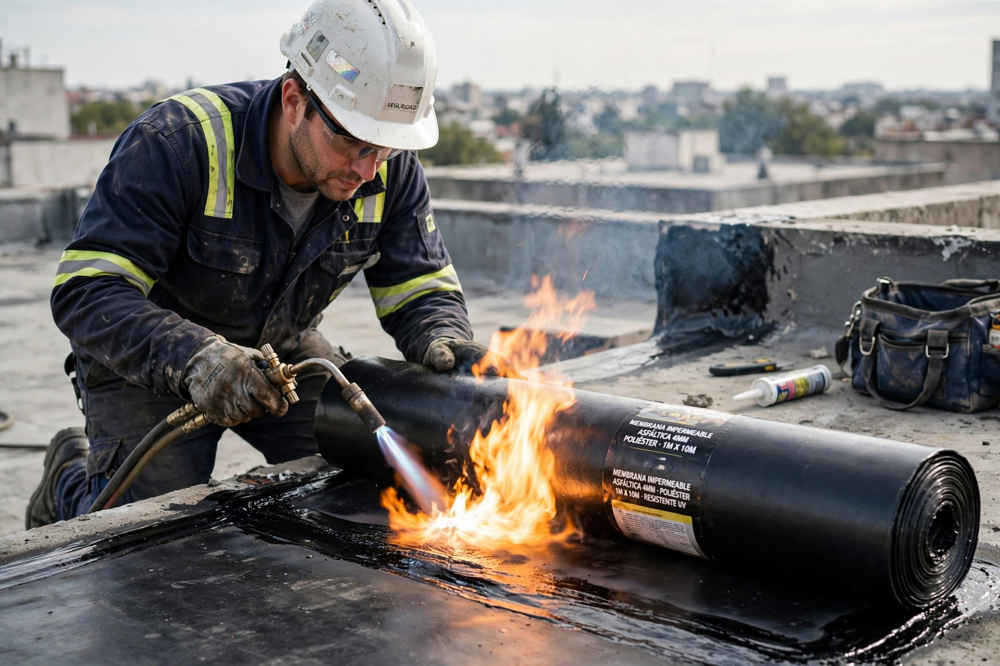
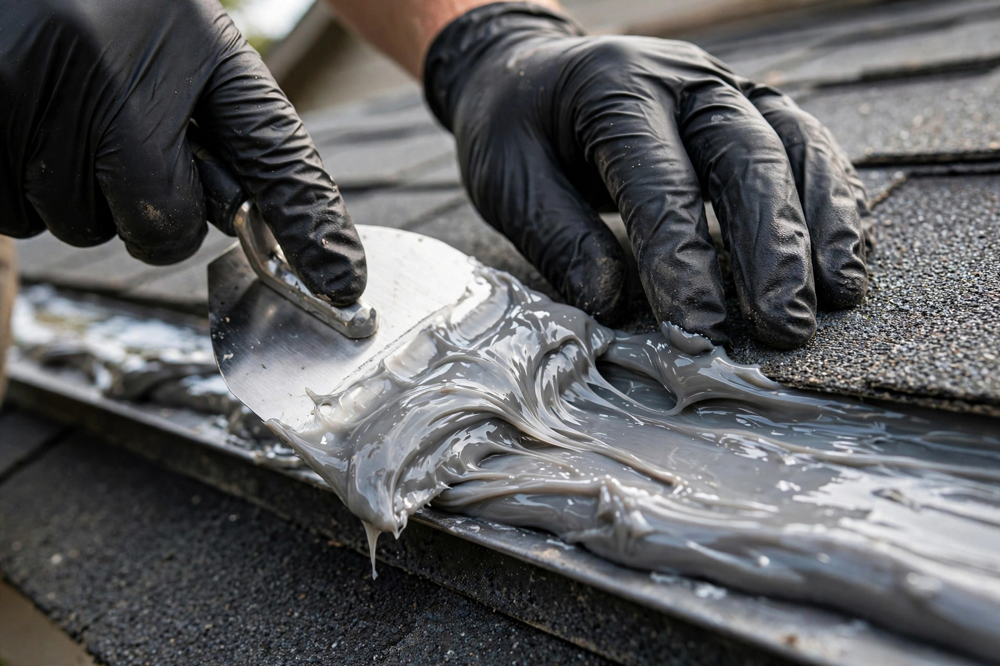
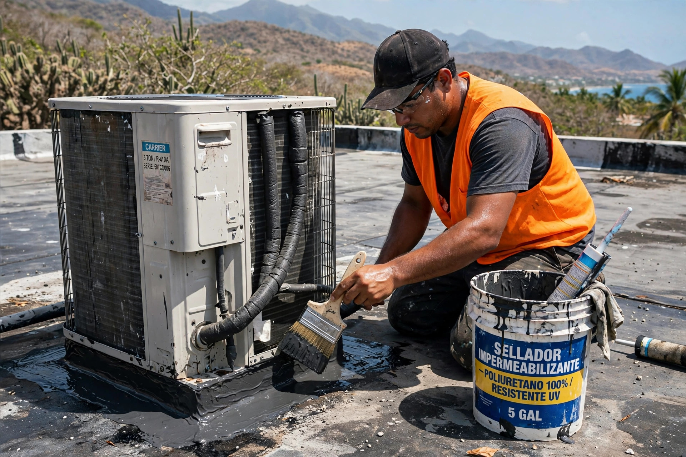

Sellado profesional de techos con acabado limpio y materiales que aguantan el clima del sur.


Sellado, reparación y mantenimiento de techos: así queda cuando se hace bien.

Sellado profesional de techos en Salinas y el área sur: membrana, corrección de filtraciones y mantenimiento con acabado limpio.
Sistemas de sellado para el clima del sur de la isla.
Instalación de membrana en rollo, sellada al calor.
Localizamos el origen y lo sellamos de raíz.
Prevención antes de la temporada de lluvia.
Casas y negocios en Salinas y el área sur.
Escríbenos por WhatsApp y cotizamos.
Trabajo serio, trato directo y resultados que se ven.
Conocemos el clima y los techos de Salinas.
Trabajo detallado, sin regueros.
Que aguantan sol fuerte y lluvia.
Cotización por WhatsApp.
Lo que todo dueño de casa pregunta antes de sellar su techo.
Cada 4 a 5 años, según el sistema aplicado y la exposición al sol y la lluvia. En el sur, el sol pega más fuerte y conviene revisar a tiempo.
Sí, si está bien adherido. Si está levantado o cuarteado, se remueve primero para que el nuevo sistema pegue bien.
Eso indica un punto crítico: junta, drenaje o penetración. Lo inspeccionamos, corregimos el origen y sellamos. Escríbenos fotos por WhatsApp.
Sí, servimos Salinas y el área sur. Escríbenos y confirmamos tu pueblo.
Por WhatsApp al 939-325-7577: envíanos fotos del techo y te respondemos con un estimado gratis.
Esta página es una muestra de lo que hacemos. Llevamos tu negocio a internet con oferta de lanzamiento por tiempo limitado.